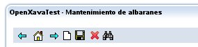

1.Visión general |
2.Mi primer proyecto |
3.Modelo |
4.Vista |
5.Datos tabulares |
6.Mapeo objeto/relacional |
7.Controladores |
8.Aplicación |
9.Personalización
Capítulo 7: Controladores
Los controladores sirven para definir las acciones (botones, vínculos, imágenes) que el usuario final puede pulsar. Los controladores se definen en un archivo llamado
controladores.xml que ha de estar en el directorio
xava de nuestro proyecto. No definimos las acciones junto con los componentes porque hay muchas acciones de uso genérico que pueden ser aplicadas a cualquier componente.
En
OpenXava/xava tenemos un
default-controllers.xml que contiene un grupo de componente de uso genérico que podemos usar en nuestras aplicaciones.
El archivo
controladores.xml contiene un elemento de tipo
<controladores/> con la sintaxis:
<controladores>
<var-entorno ... /> ... <!-- 1 -->
<objeto ... /> ... <!-- 2 -->
<controlador ... /> ... <!-- 3 -->
</controladores>
- var-entorno (varias, opcional): Variable que contienen información de configuración. Estas variables pueden ser accedidas desde las acciones y filtros, y su valor puede ser sobreescrito para cada módulo.
- objeto (varios, opcional): Define objetos Java de sesión, es decir objetos que se crean y existen durante toda la sesión del usuario.
- controlador (varios, obligado): Los controladores son agrupaciones de acciones.
Variable de entorno
Las variables de entorno contienen información de configuración. Estas variables pueden ser accedidas desde las acciones y los filtros, y su valor puede ser sobrescrito en cada módulo. Su sintaxis es:
<var-entorno
nombre="nombre" <!-- 1 -->
valor="valor" <!-- 2 -->
/>
- nombre (obligado): Nombre de la variable de entorno en mayúsculas y usando subrayados para separar palabras.
- valor (obligado): Valor para la variable de entorno.
Estos son algunos ejemplos:
<var-entorno nombre="MIAPLICACION_AÑO_DEFECTO" value="2007"/>
<var-entorno nombre="MIAPLICACION_COLOR" valor="ROJO"/>
Objetos de sesión
Los objetos Java declarados en
controladores.xml tienen ámbito de sesión; es decir, son objetos que son creado para un usuario y existen durante toda su sesión. Su sintaxis es:
<objeto
nombre="nombreObjeto" <!-- 1 -->
clase="tipoObjeto" <!-- 2 -->
valor="valorInicial" <!-- 3 -->
ambito="modulo|global" <!-- 4 Muevo en v2.1 -->
/>
- nombre (obligado): Nombre del objeto, normalmente usaremos el nombre de la aplicación como prefijo para evitar colisión de nombres en proyectos grandes.
- clase (obligado): Nombre calificado de la clase Java para esto objeto.
- valor (opcional): Valor inicial para el objeto.
- ambito (opcional): (Nuevo en v2.1) El valor por defecto es module. Si usamos modulo como ámbito cada módulo tendrá su propia copia de este objeto. Si usamos global como ámbito el mismo objeto será compartido por todos los módulos de todas la aplicaciones OpenXava (que se ejecuten dentro del mismo war).
Definir objetos de sesión es muy fácil, podemos ver los que están definidos en
OpenXava/xava/default-controllers.xml:
<object name="xava_view" class="org.openxava.view.View"/>
<object name="xava_referenceSubview" class="org.openxava.view.View"/>
<object name="xava_tab" class="org.openxava.tab.Tab"/>
<object name="xava_mainTab" class="org.openxava.tab.Tab"/>
<object name="xava_row" class="java.lang.Integer" value="0"/>
<object name="xava_language" class="org.openxava.session.Language"/>
<object name="xava_newImageProperty" class="java.lang.String"/>
<object name="xava_currentReferenceLabel" class="java.lang.String"/>
<object name="xava_activeSection" class="java.lang.Integer" value="0"/>
<object name="xava_previousControllers" class="java.util.Stack"/>
<object name="xava_previousViews" class="java.util.Stack"/>
Estos objetos son usado por OpenXava para su funcionamiento interno, aunque es bastante normal que los usemos en nuestras propias acciones. Para definir nuestro propios objetos podemos hacerlo en
controladores.xml en el directorio
xava de nuestro proyecto.
El controlador y sus acciones
La sintaxis de un controlador es:
<controlador
nombre="nombre" <!-- 1 -->
>
<hereda-de ... /> ... <!-- 2 -->
<accion ... /> ... <!-- 3 -->
</controlador>
- nombre (obligado): Nombre del controlador.
- hereda-de (varios, opcional): Permite usar herencia múltiple, para que este controlador herede todas las acciones de otro (u otros) controlador.
- accion (varios, obligada): Definición de la lógica a ejecutar cuando el usuario pulse un botón o vínculo.
Obviamente los controladores los formas las acciones, que son en sí lo importante. Aquí su sintaxis:
<accion
nombre="nombre" <!-- 1 -->
etiqueta="etiqueta" <!-- 2 -->
descripcion="descripcion" <!-- 3 -->
modo="detail|list|ALL" <!-- 4 -->
imagen="imagen" <!-- 5 -->
clase="clase" <!-- 6 -->
oculta="true|false" <!-- 7 -->
al-iniciar="true|false" <!-- 8 -->
en-cada-peticion="true|false" <!-- 9 Nuevo en v2.1.2 -->
antes-de-cada-peticion="true|false" <!-- 10 Nuevo en v2.2.5 -->
despues-de-cada-peticion="true|false" <!-- 11 Nuevo en v4.0.1 -->
por-defecto="nunca|casi-nunca (nuevo en v4m6)|
si-posible|casi-siempre|siempre" <!-- 12 -->
cuesta="true|false" <!-- 13 -->
confirmar="true|false" <!-- 14 -->
atajo-de-teclado="atajo-de-teclado" <!-- 15 Nuevo en v2.0.1 -->
mostrar-dialogo="true|false" <!-- 16 Solo en v4m1 -->
ocultar-dialogo="true|false|defecto" <!-- 17 Solo en v4m1 -->
en-cada-fila="true|false" <!-- 18 Nuevo en v4m4 -->
>
<poner ... /> ... <!-- 19 -->
<usa-objeto ... /> ... <!-- 20 -->
</accion>
- nombre (obligado): Nombre identificativo de la acción tiene que ser único dentro del controlador, pero puede repetirse el nombre en diferentes controladores. Cuando referenciemos a una acción desde fuera lo haremos siempre especificando NombreControlador.nombreAccion.
- etiqueta (opcional): Etiqueta del botón o texto del vínculo. Es mucho mejor usar los archivos i18n.
- descripcion (opcional): Texto descriptivo de la acción. Es mucho mejor usar los archivos i18n.
- modo (opcional): Indica en que modo ha de ser visible esta acción para el usuario. Por defecto es ALL, que quiere decir que esta acción es siempre visible.
- imagen (opcional): URL de la imagen asociada a la acción. En la implementación actual si especificamos imagen aparece la imagen como un vínculo en el que el usuario puede pulsar.
- clase (opcional): Clase que implementa la lógica a ejecutar. Ha de implementar la interfaz IAction.
- oculta (opcional): Una acción oculta no aparece por defecto en la barra de botones, aunque sí que se puede usar para todo lo demás, por ejemplo como acción asociada a un evento de cambio de valor, acción de propiedad, en las colecciones, etc. Por defecto vale false.
- al-iniciar (opcional): Si la ponemos a true esta acción se ejecutará automáticamente al iniciar el módulo. Por defecto vale false.
- en-cada-peticion (opcional): (Nuevo en v2.1.2) Si la ponemos a true esta acción se ejecutará automáticamente en cada petición del usuario, es decir, en la primera ejecución del módulo y antes de la ejecución de cada acción del usuario. En el momento de la ejecución todos los objetos de sesión de OpenXava están configurados y listos para usar. Es decir, desde esta acción podemos usar xava_view y xava_tab. Por defecto vale false. Usado conjuntamente con modo podemos discriminar la ejecución de esta acción a un modo concreto (lista o detalle) (nuevo en v3.0.2).
- antes-de-cada-peticion (opcional): (Nuevo en v2.2.5) Si la ponemos a true esta acción se ejecutará automáticamente antes de cada petición del usuario, es decir, en la primera ejecución del módulo y antes de la ejecución de cada acción del usuario, pero antes de que los objetos de sesión de OpenXava estén configurados y listos para usar. Es decir, desde esta acción no podemos usar xava_view ni xava_tab. Por defecto vale false. Usado conjuntamente con modo podemos discriminar la ejecución de esta acción a un modo concreto (lista o detalle) (nuevo en v3.0.2).
- despues-de-cada-peticion (opcional): (Nuevo en v4.0.1) Si la ponemos a true esta acción se ejecutará automáticamente después de cada petición del usuario, es decir, en la primera ejecución del módulo y antes de la ejecución de cada acción del usuario. Por defecto vale false. Usado conjuntamente con modo podemos discriminar la ejecución de esta acción a un modo concreto (lista o detalle).
- por-defecto (opcional): Indica el peso de esta acción a la hora de seleccionar cual es la acción por defecto. Las acción por defecto es la que se ejecuta cuando el usuario pulsa ENTER. Por defecto vale casi-nunca (hasta v4m5 era nunca).
- cuesta (opcional): Si la ponemos a true indicamos que esta acción cuesta tiempo en ejecutarse (minutos u horas), en la implementación actual OpenXava visualiza una barra de progreso. Por defecto vale false.
- confirmar (opcional): Si la ponemos a true antes de ejecutarse la acción un diálogo le preguntará al usuario si está seguro de querer ejecutarla. Por defecto vale false.
- atajo-de-teclado (opcional): Define una atajo de teclado que el usuario puede pulsar para ejecutar esta acción. Los valores posibles son los mismos que para javax.swing.KeyStroke. Ejemplos: "control A", "alt x", "F7" (nuevo en v2.0.1).
- motrar-dialogo (opcional): (Solo en v4m1, no está disponible desde v4m2) Si true después de ejecutar la acción la interfaz de usuario actual se mostrará dentro de un diálogo modal. Por defecto vale false.
- ocultar-dialogo (opcional): (Solo en v4m1, no está disponible desde v4m2) Si true si actualmente hay un diálogo mostrándose lo cierra. Por defecto vale defecto, lo que indica que el diálogo se ocultará solo si la acción se llama "cancelar" o es la acción por defecto.
- en-cada-fila (opcional): (Nuevo en v4m4) Si true y esta acción se muestra en modo lista o en una colección la acción aparecerá en cada fila. La acción tiene que tener una propiedad int row (TabBaseAction y CollectionBaseAction ya tienen la propiedad row incluida). Por defecto vale false.
- poner (varios, opcional): Sirve para dar valor a las propiedades de la acción. De esta forma una misma acción configurada de forma diferente puede usarse en varios controladores.
- usa-objeto (varios, opcional): Asigna un objeto de sesión a una propiedad de la acción antes de ejecutarse, y al acabar recoge el valor de la propiedad y lo coloca en el contexto (actualiza el objeto de sesión).
Las acciones son objetos de corta vida, cuando el usuario pulsa un botón se crea el objeto acción, se configura con lo valores de
poner,
usa-objeto o
@Inject, se ejecuta y se actualiza los objetos de sesión, y después de eso se desprecia.
Un controlador sencillo puede ser:
<controlador nombre="Observaciones">
<accion nombre="ocultarObservaciones"
clase="org.openxava.test.acciones.OcultarMostrarPropiedad">
<poner propiedad="propiedad" valor="observaciones" />
<poner propiedad="ocultar" valor="true" />
<usa-objeto nombre="xava_view"/> <!-- No necesario desde v4m2 -->
</accion>
<accion nombre="mostrarObservaciones" modo="detail"
clase="org.openxava.test.actiones.OcultarMostrarPropiedad">
<poner propiedad="propiedad" valor="observaciones" />
<poner propiedad="ocultar" valor="false" />
<usa-objeto nombre="xava_view"/> <!-- No necesario desde v4m2 -->
</accion>
<accion nombre="ponerObservaciones" modo="detail"
clase="org.openxava.test.acciones.PonerValorPropiedad">
<poner propiedad="propiedad" valor="observaciones" />
<poner propiedad="valor" valor="Demonios tus ojos" />
<usa-objeto nombre="xava_view"/> <!-- No necesario desde v4m2 -->
</accion>
</controladores>
Podemos ahora incluir este controlador en el módulo deseado; esto se hace editando en
xava/aplicacion.xml el módulo en el que deseemos usar estas acciones:
<modulo nombre="Albaranes">
<modelo nombre="Albaran"/>
<controlador nombre="Typical"/>
<controlador nombre="Observaciones"/>
</modulo>
De esta forma en este módulo tendremos disponibles las acciones de
Typical (mantenimiento e impresión) más las que nosotros hemos definido en nuestro controlador
Observaciones. La barra de botones superior del módulo tendrá el siguiente aspecto:

Y la barra de botones inferior:
Vemos como las acciones con imagen se colocan arriba, y las acciones sin imagen abajo.
Podemos observar el código
ocultarObservaciones por ejemplo:
package org.openxava.test.acciones;
import org.openxava.actions.*;
/**
* @author Javier Paniza
*/
public class OcultarMostrarPropiedad extends ViewBaseAction { // 1
private boolean ocultar;
private String propiedad;
public void execute() throws Exception { // 2
getView().setHidden(propiedad, ocultar); // 3
}
public boolean isOcultar() {
return ocultar;
}
public void setOcultar(boolean b) {
ocultar = b;
}
public String getPropiedad() {
return propiedad;
}
public void setPropiedad(String string) {
propiedad = string;
}
}
Una acción ha de implementar
IAction, pero normalmente se hace que descienda de una clase base que a su vez implemente esta interfaz. La acción base básica es
BaseAction que implementa la mayoría de los métodos de
IAction a excepción de
execute(). En este caso usamos
ViewBaseAction como clase base.
ViewBaseAction tiene una propiedad view de tipo
View. Esto unido a que al declarar la acción hemos puesto...
<usa-objeto nombre="xava_view"/> <!-- No necesario desde v4m2 -->
...permite desde esta acción manipular mediante view la vista, o dicho de otra forma la interfaz de usuario que éste está viendo.
El
<usa-objeto /> coge el objeto de sesión
xava_view y lo asigna a la propiedad
view (quita el prefijo
xava_, y en general quita el prefijo
miaplicacion_ antes de asignar el objeto) de nuestra acción justo antes de llamar a
execute(). Aunque a partir de v4m2 no es necesario usar
<usa-objeto /> para inyectar
xava_view porque
ViewBaseAction ya lo inyecta mediante
@Inject.
Ahora dentro del método
execute() podemos usar
getView() a placer (3), en este caso para ocultar una propiedad. Todas las posibilidades de
View las podemos ver consultando la documentación JavaDoc de
org.openxava.view.View.
Con...
<poner propiedad="propiedad" valor="observaciones" />
<poner propiedad="ocultar" valor="true" />
establecemos valores fijos a las propiedades de nuestra acción.
Inyección de dependencias
Con
Inyección de dependencias el valor para un campo o propiedad lo establece el marco de trabajo, y no el desarrollador.
@Inject (JSR-330) (nuevo en v4m2)
A partir de v4m2 OpenXava soporta
JSR-330, el estándar Java para inyección de dependencias. Para inyectar un objeto de sesión en una acción solo hemos de anotar un campo con
@javax.inject.Inject. Es decir, si tenemos un objeto de sesión y una acción en nuestro
controladores.xml como los que siguen:
<controladores>
<objeto nombre="xavatest_anoActivo" clase="java.lang.Integer" valor="2010" ambito="global"/>
<controlador nombre="AnoActivo">
<accion nombre="cambiar"
clase="org.openxava.test.acciones.CambiarAnoActivo"/>
</controlador>
</controladores>
Para inyectar el objeto
xavatest_anoActivo en
CambiarAnoActivo hemos de usar
@Inject de la siguiente manera:
public class CambiarAnoActivo extends ViewBaseAction {
@Inject
private int anoActivo; // Los getter y setter no son necesarios
public void execute() throws Exception {
assert anoActivo == 2010; // El valor del objeto de sesión
anoActivo = 2012; // Cambia el valor del objeto de sesión
}
}
Así el objeto
xavatest_anoActivo se inyecta en la propiedad
anoActivo antes de llamar a
execute(); y después de ejecutar
execute() el valor del campo
anoActivo se vuelve a asignar a
xavatest_anoActivo. Por tanto, se puede cambiar el estado de los objetos de sesión, incluso con tipos inmutables o primitivos.
Como se puede ver, el nombre por defecto del objeto de sesión a inyectar es el nombre del atributo ignorando el prefijo (ignorando
xavatest_ en este caso). Aunque podemos usar
@Named (también parte del estándar JSR-330) para especificar un nombre diferente para el objeto de sesión y el campo:
public class CambiarAnoActivo extends ViewBaseAction {
@Inject @Named("xavatest_anoActivo")
private int ano; // Los getter y setter no son necesarios
public void execute() throws Exception {
assert ano == 2010; // El valor del objeto de sesión xavatest_anoActivo
ano = 2012; // Cambia el valor de avatest_anoActivo
}
}
De esta forma el objeto de sesión
xavatest_anoActivo se inyecta en el campo
ano de la acción.
Usar <usa-objeto /> para inyección de dependencias
La inyección de dependencias ha sido usada en OpenXava desde tiempos inmemorables. La forma tradicional para inyectar objetos de sesión en una acción es mediante
<usa-objeto /> en la declaración
<accion/>. Si usas una versión anterior a v4m2, tendrás que escribir el ejemplo de arriba usando
<usa-objeto/> en
controladores.xml:
<controladores>
<objeto nombre="xavatest_anoActivo" clase="java.lang.Integer" valor="2010" ambito="global"/>
<controlador nombre="AnoActivo">
<accion nombre="cambiar"
clase="org.openxava.test.acciones.CambiarAnoActivo">
<usa-objeto nombre="xavatest_anoActivo"/>
</accion>
</controlador>
</controladores>
Y escribir la clase sin
@Inject, y usando
getter y
setter:
public class CambiarAnoActivo extends ViewBaseAction {
private int anoActivo; // Sin @Inject, estamos usando <usa-objeto/>
public void execute() throws Exception {
assert anoActivo == 2010; // El valor del objeto de sesión
anoActivo = 2012; // Cambia el valor del objeto de sesión
}
public void setAnoActivo(int anoActivo) { // Setter y...
this.anoActivo = anoActivo;
}
public int getAnoActivo() { // getter son necesarios
return anoActivo;
}
}
Podemos usar el atributo
propiedad-accion para especificar un nombre diferente para el objeto de sesión y el campo:
<accion nombre="cambiar"
class="org.openxava.test.acciones.CambiarAnoActivo">
<usa-objeto nombre="xavatest_anoActivo" propiedad-accion="ano"/>
</accion>
Y entonces hemos de escribir la acción de la siguiente forma:
public class CambiarAnoActivo extends ViewBaseAction {
private int ano; // Sin @Inject, estamos usando <usa-objeto/>
public void execute() throws Exception {
assert ano == 2010; // El valor del objeto de sesión xavatest_anoActivo
ano = 2012; // Cambia el valor de xavatest_anoActivo
}
public void setAno(int ano) { // Setter y...
this.ano = ano;
}
public int getAno() { // getter son necesarios
return ano;
}
}
Vemos como
propiedad-accion es el homólogo de
@Name de JSR-330.
Podemos usar ambos
<usa-objeto/> e
@Inject para inyección de dependencias, pero dado que JSR-330 es el estándar de Java es el preferido.
Herencia de controladores
Podemos crear un controlador que herede todas sus acciones de uno o más controladores. Un ejemplo de esto lo encontramos en el controlador genérico más típico
Typical, este controlador se encuentra en
OpenXava/xava/default-controllers.xml:
<controller name="Typical">
<extends controller="Print"/>
<extends controller="CRUD"/>
</controller>
A partir de ahora cuando indiquemos que un módulo usa el controlador
Typical este módulo tendrá a su disposición todas las acciones de
Print (para generar informes PDF y Excel) y
CRUD (para hace altas, bajas, modificaciones y consultas).
Podemos usar la herencia para refinar la forma de trabajar de un controlador estándar, como sigue:
<controlador nombre="Familia">
<hereda-de controlador="Typical"/>
<accion nombre="new" imagen="images/new.gif"
clase="org.openxava.test.acciones.CrearNuevaFamilia">
<usa-objeto nombre="xava_view"/> <!-- No obligatorio desde v4m2 -->
</accion>
</controlador>
Como el nombre de nuestra acción
new coincide con la de
Typical (en realidad la de
CRUD del cual desciende
Typical) se anula la original y se usará la nuestra. Así de fácil podemos indicar que ha de hacer nuestro módulo cuando el usuario pulse nuevo.
Acciones en modo lista
Podemos hacer acciones que apliquen a varios objetos. Estas acciones normalmente solo se visualizan en modo lista y suelen actuar sobre los objetos que el usuario haya escogido.
Un ejemplo puede ser:
<accion nombre="borrarSeleccionados" modo="list" <!-- 1 -->
confirmar="true" <!-- 2 -->
clase="org.openxava.actions.DeleteSelectedAction">
</accion>
Ponemos mode="list" para que solo aparezca en modo lista (1). Ya que esta acción borra registros hacemos que el usuario tenga que confirmar antes de ejecutarse (2). No es necesario incluir un
<usa-objeto/> para
xava_tab (nuevo en v2.1.4).
Programar la acción sería así:
package org.openxava.actions;
import java.util.*;
import org.openxava.model.*;
import org.openxava.validators.*;
/**
* @author Javier Paniza
*/
public class DeleteSelectedAction extends TabBaseAction implements IModelAction { // 1
private String model;
public void execute() throws Exception {
// int [] selectedOnes = getTab().getSelected(); // 2
int [] selectedOnes = getSelected(); // Nuevo en v4m4 // 2
if (selectedOnes != null) {
for (int i = 0; i < selectedOnes.length; i++) {
Map clave = (Map)
getTab().getTableModel().getObjectAt(selectedOnes[i]);
try {
MapFacade.remove(model, clave); // 3
}
catch (ValidationException ex) {
addError("no_delete_row", new Integer(i), clave);// (4)
addErrors(ex.getErrors());
}
catch (Exception ex) {
addError("no_delete_row", new Integer(i), clave);
}
}
getTab().deselectAll(); // 5
resetDescriptionsCache(); // 6
}
}
public void setModel(String modelName) { // 7
this.model = modelName;
}
}
Esta acción es una acción estándar de OpenXava, pero nos sirve para ver que cosas podemos hacer dentro de nuestras acciones de modo lista. Observamos (1) como desciende de
TabBaseAction e implementa
IModelAction, al descender de
TabBaseAction (new in v2.1.4) tiene un conjunto de utilidades disponible y no estamos obligados a implementar todos los métodos de
IAction; y al implementar
IModelAction nuestra acción tendrá un metoto
setModel() (7) con el que recibirá el nombre del modelo (del componente OpenXava) antes de ejecutarse.
Puedes acceder al
Tab usando el método
getTab() (2); este método está implementado en
TabBaseAction y permite acceder al objeto de sesión
xava_tab. Mediante
getTab() podemos manipular la lista de objetos visualizados. Por ejemplo, con
getTab().getSelected() (2) obtenemos los índices de las filas seleccionadas, aunque desde 4m4 es mejor usar
getSelected() en su lugar que es un método de
TabBaseAction. Con
getTab().getTableModel() un table model para acceder a los datos, y con
getTab().deselectAll() deseleccionar las filas. Podemos echar un vistazo a la documentación JavaDoc de
org.openxava.tab.Tab para más detalles sobre sus posibilidades.
Algo muy interesante que se ve en este ejemplo es el uso de la clase
MapFacade (3).
MapFacade permite acceder a la información del modelo mediante mapas de Java (
java.util.Map), esto es conveniente cuando obtenemos datos de
Tab o
View en formato
Map y queremos con ellos actualizar el modelo (y por ende la base de datos) o viceversa. Todas las clases genéricas de OpenXava interactúan con el modelo mediante
MapFacade y nosotros también lo podemos usar, pero como consejo general de diseño decir que trabajar con mapas es práctico para proceso automáticos pero cuando queremos hacer cosas específicas es mejor usar directamente los objetos del modelo. Para más detalles podemos ver la documentación JavaDoc de
org.openxava.model.MapFacade.
Observamos como añadir mensajes que serán visualizados al usuario con
addError(). El método
addError() recibe el id de una entrada en nuestros archivos i18n y los argumentos que el mensaje pueda usar. Los mensajes añadidos se visualizaran al usuario como errores. Si queremos añadir mensajes de advertencia podemos usar
addMessage() que tiene exactamente el mismo funcionamiento que
addError(). Los archivos i18n para errores y mensajes han de llamarse
MiProyecto-messages.properties o
MensajeMiProyecto.properties y el sufijo del idioma (_en, _ca, _es, _it, etc). Podemos ver como ejemplos los archivos que hay en
OpenXavaTest/xava/i18n. Todas las excepciones no atrapadas producen un mensaje de error genérico, excepto si la excepción es una
ValidationException en cuyo caso visualiza el mensaje de error de la excepción.
El método
resetDescriptionsCache() (6) borra los caché usados por OpenXava para visualizar listas de descripciones (combos), es conveniente llamarlo siempre que se actualicen datos.
Podemos ver más posibilidades si vemos la documentación JavaDoc de
org.openxava.actions.BaseAction y
org.openxava.actions.TabBaseAction.
Desde v2.1.4 este tipo de acciones
también pueden ser usadas como @ListAction (<accion-lista/> de una
<vista-coleccion/>).
Sobreescribir búsqueda por defecto
Cuando en un módulo nos aparece el modo lista y pulsamos para visualizar un detalle, entonces OpenXava busca el objeto correspondiente y lo visualiza en el detalle. Ahora bien si en modo detalle rellenamos la clave y pulsamos a buscar (unos prismático) también hace lo mismo. Y cuando navegamos por los registros pulsando siguiente o anterior hace la misma búsqueda. ¿Cómo podemos personalizar las búsqueda? Vamos a ver cómo.
Lo único que hemos de hacer es definir nuestro módulo en
xava/aplicacion.xml de la siguiente forma:
<modulo nombre="Albaranes">
<var-entorno nombre="XAVA_SEARCH_ACTION" valor="Albaranes.buscar"/>
<modelo nombre="Albaran"/>
<controlador nombre="Typical"/>
<controlador nombre="Observaciones"/>
<controlador nombre="Albaranes"/>
</modulo>
Podemos observar que definimos una variable de entorno XAVA_SEARCH_ACTION que tiene el valor de la acción que queremos usar para buscar. Esa acción está definida en
xava/controladores.xml así:
<controlador nombre="Albaranes">
<accion nombre="buscar" modo="detail"
por-defecto="si-posible" oculta="true"
clase="org.openxava.test.acciones.BuscarAlbaran"
atajo-de-teclado="F8">
<usa-objeto nombre="xava_view"/> <!-- No obligatorio desde v4m2 -->
</accion>
...
</controlador>
Y su código es:
package org.openxava.test.acciones;
import java.util.*;
import org.openxava.actions.*;
import org.openxava.util.*;
/**
* @author Javier Paniza
*/
public class BuscarAlbaran extends SearchByViewKeyAction { // 1
public void execute() throws Exception {
super.execute(); // 2
if (!Is.emptyString(getView().getValueString("empleado"))) {
getView().setValue("entregadoPor", new Integer(1));
getView().setHidden("transportista", true);
getView().setHidden("empleado", false);
}
else {
Map transportista = (Map) getView().getValue("transportista");
if (!(transportista == null || transportista.isEmpty())) {
getView().setValue("entregadoPor", new Integer(2));
getView().setHidden("transportista", false);
getView().setHidden("empleado", true);
}
else {
getView().setHidden("transportista", true);
getView().setHidden("empleado", true);
}
}
}
}
Básicamente hemos de buscar en la base de datos (o mediante las APIs de EJB2, EJB3 JPA o Hibernate) y llenar la vista. Muchas veces lo más práctico es hacer que extienda de
SearchByViewKeyAction (1) y dentro del
execute() hacer un
super.execute() (2).
OpenXava viene con 3 acciones de búsquedas:
- CRUD.searchByViewKey: Esta es la configurada por defecto. Hace una búsqueda a partir de la clave que hay ese momento en la vista, no ejecuta ningún evento.
- CRUD.searchExecutingOnChange: Funciona como la anterior pero al buscar ejecuta las acciones @OnChange/al-cambiar asociadas a las propiedades de la vista.
- CRUD.searchReadOnly: Funciona como searchByViewKey pero pone la vista de detalle a estado no editable al buscar. Útil para crear módulos de consulta.
Si queremos que al buscar ejecute las acciones al cambiar tenemos que definir nuestro módulo de la siguiente forma:
<modulo nombre="ProductosAccionesAlCambiarAlBuscar">
<var-entorno nombre="XAVA_SEARCH_ACTION" valor="CRUD.searchExecutingOnChange"/>
<modelo nombre="Producto"/>
<controlador nombre="Typical"/>
<controlador nombre="Productos"/>
<controlador-modo nombre="Void"/>
</modulo>
Como se ve, simplemente poniendo valor a la variable de entorno XAVA_SEARCH_ACTION.
Inicializando un módulo con una acción
Con solo poner
al-iniciar="true" cuando definimos una acción hacemos que esta acción se ejecute automáticamente cuando se ejecuta el módulo por primera vez. Esto nos da una oportunidad para inicializar nuestro módulo. Veamos un ejemplo. En nuestro
controladores.xml ponemos:
<controlador nombre="Facturas2002">
<accion nombre="iniciar" al-iniciar="true" oculta="true"
clase="org.openxava.test.acciones.IniciarAñoDefectoA2002">
<!-- <usa-objeto nombre="xavatest_añoDefecto"/> A partir de v4m2 podemos usar @Inject -->
<!-- <usa-objeto nombre="xava_tab"/> A partir de v4m2 podemos usar @Inject -->
</accion>
...
</controlador>
Y en nuestra acción:
package org.openxava.test.acciones;
import javax.inject.*;
import org.openxava.actions.*;
import org.openxava.tab.*;
/**
* @author Javier Paniza
*/
public class IniciarAñoDefectoA2002 extends BaseAction {
@Inject // A partir de v4m2, si no usamos <usa-objeto/>
private int añoDefecto;
@Inject // A partir de v4m2, si no usamos <usa-objeto/>
private Tab tab;
public void execute() throws Exception {
setAñoDefecto(2002); // 1
tab.setTitleVisible(true); // 2
tab.setTitleArgument(new Integer(2002)); // 3
}
public int getAñoDefecto() {
return añoDefecto;
}
public void setAñoDefecto(int i) {
añoDefecto = i;
}
public Tab getTab() {
return tab;
}
public void setTab(Tab tab) {
this.tab = tab;
}
}
Establecemos el año por defecto a 2002 (1), hacemos que el título de la lista sea visible (2) y asignamos un valor como argumento para ese título (3). El título de la lista está definido en los archivos i18n, normalmente se usa para los informes, pero podemos visualizarlos también en modo lista.
Llamar a otro módulo
A veces resulta conveniente llamar programáticamente desde un módulo a otro. Por ejemplo, imaginemos que queremos sacar una lista de clientes y al pulsar en uno nos aparezca una lista de sus facturas y al pulsar en la factura poder editarla. Una manera de conseguir esto es tener un módulo de clientes que tenga solo la lista y al pulsar vayamos al modulo de facturas haciendo que el tab filtre para mostrar solo las de ese cliente. Vamos a verlo. Primero definiríamos el módulo en
aplicacion.xml de la siguiente forma:
<modulo nombre="FacturasDeClientes">
<var-entorno nombre="XAVA_LIST_ACTION" valor="Facturas.listarDeCliente"/> <!-- 1 -->
<modelo nombre="Cliente"/>
<controlador nombre="Print"/>
<controlador nombre="ListOnly"/> <!-- 2 -->
<controlador-modo nombre="Void"/> <!-- 3 -->
</modulo>
En este modulo solo aparece la lista (sin la parte de detalle) para eso decimos que el controlador de modo ha de ser
Void (3) y así no aparece lo de detalle y lista, y añadimos un controlador llamado
ListOnly (2) para que sea el modo lista el que aparezca (si ponemos controlador de modo
Void y nada más por defecto aparecería solo el detalle). Además declaramos la variable XAVA_LIST_ACTION para que apunte a una acción nuestra, ahora cuando el usuario pulse en el vínculo que aparece en cada fila de la lista ejecutará nuestra propia acción. Esta acción hemos de declararla en
controladores.xml:
<controlador nombre="Facturas">
<accion nombre="listarDeCliente" oculta="true"
clase="org.openxava.test.acciones.ListarFacturasDeCliente">
<!-- <usa-objeto nombre="xava_tab"/> A partir de v4m2 podemos usar @Inject -->
</accion>
...
</controlador>
Y el código de la acción:
package org.openxava.test.acciones;
import java.util.*;
import javax.inject.*;
import org.openxava.actions.*;
import org.openxava.controller.*;
import org.openxava.tab.*;
/**
* @author Javier Paniza
*/
public class ListarFacturasDeCliente extends BaseAction
implements IChangeModuleAction, // 1
IModuleContextAction { // 2
private int row; // 3
@Inject // A partir de v4m2, si no usamos <usa-objeto/>
private Tab tab;
private ModuleContext context;
public void execute() throws Exception {
Map claveCliente = (Map) tab.getTableModel().getObjectAt(row); // 4
int codigoCliente = ((Integer) claveCliente.get("codigo")).intValue();
Tab tabFacturas = (Tab)
context.get("OpenXavaTest", getNextModule(), "xava_tab"); // 5
tabFacturas.setBaseCondition("${cliente.codigo} = "+codigoCliente); // 6
}
public int getRow() { // 3
return row;
}
public void setRow(int row) { // 3
this.row = row;
}
public Tab getTab() {
return tab;
}
public void setTab(Tab tab) {
this.tab = tab;
}
public String getNextModule() { // 7
return "FacturasDeCliente";
}
public void setContext(ModuleContext context) { // 8
this.context = context;
}
public boolean hasReinitNextModule() { // 9
return true;
}
}
Para poder cambiar de módulo la acción implementa
IChangeModuleAction (1) esto hace que tenga que tener un método
getNextModule() (7) que sirve para indicar cual será el módulo al que cambiaremos después de ejecutar la acción, y
hasReinitNextModule() (9) para indicar si queremos que se reinicie el módulo al cambiar a él.
Por otra parte hace que implemente
IModuleContextAction (2) que hace que esta acción reciba un objeto de tipo
ModuleContext con el método
setContext() (8).
ModuleContext nos permite acceder a objetos de sesión de otros módulos, es útil para poder configurar el módulo al que vamos a cambiar.
Desde v4m1
BaseAction implementa
IModuleContextAction, por tanto solo necesitas usar
getContext() desde tu método
execute():
public class ListarFacturasDeCliente extends BaseAction
implements IChangeModuleAction,
// IModuleContextAction { // Innecesario desde v4m1
...
// private ModuleContext context; // Innecesario desde v4m1
public void execute() throws Exception {
...
Tab tabFacturas = (Tab)
getContext(). // Puedes usar getContext() de BaseAction
get("OpenXavaTest", getNextModule(), "xava_tab");
...
}
...
// public void setContext(ModuleContext context) { // Not needed since v4m1
// this.context = context;
// }
...
}
Otro detalle es que la acción que se pone como valor para XAVA_LIST_ACTION ha de tener un propiedad llamada
row (3); antes de ejecuta la acción se llena esta propiedad con la fila en la que el usuario ha pulsado.
Teniendo esto en cuenta es fácil entender lo que hace la acción:
- Coge la clave del objeto asociada a la fila pulsada (4), para ello usa el tab del modulo actual.
- Accede al tab del módulo al que vamos usando context (5).
- Establece la condición base del tab del módulo al que vamos a ir (6) usando la clave obtenida del tab actual.
Mostrar una vista nueva (nuevo en v4m2)
Como alternativa a cambiar el módulo se puede optar por mostrar una nueva vista. Es fácil, solo necesitas usar las APIs disponible en
ViewBaseAction. Ahí hay métodos como
showNewView(),
showView() y
returnToPreviousView(). Un ejemplo:
public class VerClienteDesdeFactura extends ViewBaseAction {
public void execute() throws Exception {
try {
Object codigo = getView().getValue("cliente.codigo"); // 1
Map key = new HashMap();
key.put("codigo", codigo);
showNewView(); // 2
getView().setModelName("Cliente"); // 3
getView().setValues(key); // 4
getView().findObject(); // 5
getView().setKeyEditable(false);
getView().setEditable(false);
setControllers("Return"); // 6
}
catch (ObjectNotFoundException ex) {
getView().clear();
addError("object_not_found");
}
catch (Exception ex) {
ex.printStackTrace();
addError("system_error");
}
}
}
Esto es el código de una acción que permite visualizar un objeto de otro tipo. Primero hemos de memorizar la clave del objeto a leer (1). Después, mostramos una nueva vista (2) por medio de
showNewView(). Este método crea una nueva vista y la establece como vista por defecto, por tanto se visualiza. Después de esto cualquier referencia a
getView() será para la nueva vista (3). Finalmente, rellenamos los valores clave (4) y usamos
findObject() (5) para cargar los datos en la vista. También usamos
setControllers() (6) para establecer un nuevo conjunto de acciones a mostrar.
Cuando usamos
showNewView() la vista actual se almacena en una pila, y podemos traerla de vuelta llamando al método
returnToPreviousView().
Cambiar el modelo de la vista actual
Si trabajas con una versión anterior a v4m2 una alternativa a mostrar una nueva vista es cambiar el modelo de la vista actual. Hacer esto es muy sencillo solo hemos de usar las APIs disponible en
View. Un ejemplo:
public void execute() throws Exception {
try {
setValoresFactura(getView().getValues()); // 1
Object codigo = getView().getValue("producto.codigo");
Map clave = new HashMap();
clave.put("codigo", codigo);
getView().setModelName("Producto"); // 2
getView().setValues(clave); // 3
getView().findObject(); // 4
getView().setKeyEditable(false);
getView().setEditable(false);
}
catch (ObjectNotFoundException ex) {
getView().clear();
addError("object_not_found");
}
catch (Exception ex) {
ex.printStackTrace();
addError("system_error");
}
}
Este es un extracto de una acción que permite visualizar pulsando la acción un objeto de otro tipo. Lo primero que hacemos es guardarnos los datos visualizados actualmente (1), para poder dejar la vista como estaba cuando volvamos. Después cambiamos el módulo de la vista (2), esto es la parte clave. Ahora solo llenamos los valores clave (3) y con
findObject() (4) hacemos que se rellene lo demás.
Cuando usamos esta técnica hemos de tener presente que cada módulo tiene un solo objeto
xava_view activo a la vez, así que si queremos volver hacia atrás tenemos que ocuparnos nosotros de poner el modelo y vista original en la vista así como de restaurar la información que tenía.
Ir a una página JSP
El generador automático de vista de OpenXava suele ir bien para la inmensa mayoría de los casos, pero puede que nos interese visualizar al usuario una página JSP diseñada manualmente por nosotros. Podemos hacer esto con una acción como esta:
package org.openxava.test.acciones;
import org.openxava.actions.*;
/**
* @author Javier Paniza
*/
public class MiAccionBuscar extends BaseAction implements INavigationAction { // 1
public void execute() throws Exception {
}
public String[] getNextControllers() { // 2
return new String [] { "MiReferencia" } ;
}
public String getCustomView() { // 3
return "quieresBuscar.jsp";
}
public void setKeyProperty(String s) {
}
}
Para ir a una vista personalizada (a una página JSP en este caso) hacemos que nuestra acción implemente
INavigationActionICustomViewAction (con hubiera bastado) y de esta forma podemos indicar con
getNextControllers() (2) los siguientes controladores a usar y con
getCustomView() (3) la página JSP que ha de visualizarse (3).
Generar un informe propio con JasperReports
OpenXava permite al usuario final generar sus propios informes desde el modo lista. El usuario puede filtrar, ordenar, añadir/quitar campos, cambiar la posición de los campos y entonces generar un informe PDF.
Pero todas las aplicaciones de gestión no triviales necesitan sus propios informes creados programáticamente. Puedes hacer esto fácilmente usando JasperReports e integrando tu informe en tu aplicación OpenXava con la acción
JasperReportBaseAction.
En primer lugar tienes que diseñar tu informe JasperReports, puedes hacerlo usando el excelente diseñador iReport.
Una vez hecho eso puedes escribir tu acción de impresión de esta manera:
package org.openxava.test.acciones;
import java.util.*;
import net.sf.jasperreports.engine.*;
import net.sf.jasperreports.engine.data.*;
import org.openxava.actions.*;
import org.openxava.model.*;
import org.openxava.test.model.*;
import org.openxava.util.*;
import org.openxava.validators.*;
/**
* Informe de productos de la subfamilia seleccionada. <p>
*
* Usa JasperReports. <br>
*
* @author Javier Paniza
*/
public class InformeProductosDeFamiliaAction extends JasperReportBaseAction { // 1
private ISubfamilia2 subfamilia;
public Map getParameters() throws Exception { // 2
Messages errores =
MapFacade.validate("FiltroPorSubfamilia", getView().getValues());
if (errores.contains()) throw new ValidationException(errores); // 3
Map parametros = new HashMap();
parametros.put("familia", getSubfamilia().getFamilia().getDescripcion());
parametros.put("subfamilia", getSubfamilia().getDescripcion());
return parametros;
}
protected JRDataSource getDataSource() throws Exception { // 4
return new JRBeanCollectionDataSource(
getSubfamilia().getProductosValues());
}
protected String getJRXML() { // 5
return "Productos.jrxml"; // Para leer del classpath
//return "/home/javi/Products.jrxml"; // Para leer del sistema de ficheros
}
private ISubfamilia2 getSubfamilia() throws Exception {
if (subfamilia == null) {
int codigoSubfamilia = getView().getValueInt("subfamilia.codigo");
// Usando Hibernate, lo más típico
subfamilia = (ISubfamilia2)
XHibernate.getSession().get(
Subfamilia2.class, new Integer(codigoSubfamilia));
// Usando EJB
// subfamilia = Subfamilia2Util.getHome().
// findByPrimaryKey(new Subfamilia2Key(codigoSubfamilia));
}
return subfamilia;
}
}
Solo necesitas que tu acción extienda de
JasperReportBaseAction (1) y sobreescribir los siguientes 3 métodos:
- getParameters() (2): Un Map con los parámetros a enviar al informe, en este caso hacemos también la validación de los datos entrados (usando MapFacade.validate()) (3).
- getDataSource() (4): Un JRDataSource con los dato a imprimir. En este caso una colección de JavaBeans obtenidos llamando a un objeto modelo. Si usas EJB EntityBeans CMP2 sé cuidadoso y no hagas un bucle sobre una colección de EntityBeans EJB2 dentro de este método, como en este caso obtén los datos con una sola llamada EJB.
- getJRXML() (5): El XML con el diseño JasperReports, este archivo puede estar en el classpath. Puedes tener para esto una carpeta de código fuente llamada informes en tu proyecto. Otra opción es poner este archivo en el sistema de ficheros (nuevo en v2.0.3), esto se consigue especificando la ruta completa del archivo, por ejemplo: /home/javi/Productos.jrxml o c:\\informes\\Productos.jrxml (empezar con una letra de unidad de windows es reconocido como ruta absoluta desde v3.0.3).
Por defecto el informe es visualizado en una ventana emergente, pero si lo deseas puedes sobreescribir el método
inNewWindow() para que el informa aparezca en la ventana actual.
Podemos encontrar más ejemplos de acciones JasperReport en el proyecto OpenXavaTest, como
InvoiceReportAction para imprimir una Factura.
Cargar y procesar un fichero desde el cliente (formulario multipart)
Esta característica nos permite procesar en nuestra aplicación OpenXava un archivo binario (o varios) enviado desde el cliente. Esto está implementado en un contexto HTTP/HTML con formularios multipart de HTML, aunque el código OpenXava es tecnologicamente neutral, por ende nuestra acción será portable a otros entornos sin recodificar.
Para cargar un archivo lo primero es crear una acción para ir al formulario en donde el usuario pueda escoger su archivo. Esta acción tiene que implementar
ILoadFileAction, de esta forma:
public class CambiarImagen extends BaseAction implements ILoadFileAction { // 1
...
public void execute() throws Exception { // 2
}
public String[] getNextControllers() { // 3
return new String [] { "CargarImagen" };
}
public String getCustomView() { // 4
return "xava/editors/cambiarImagen";
}
public boolean isLoadFile() { // 5
return true;
}
...
}
Una acción
ILoadFileAction (1) es también una
INavigationAction que nos permite navegar a otros controladores (3) y a otra vista personalizada (4). El nuevo controlador (3) normalmente tendrá un acción del tipo
IProcessLoadedFileAction. El método
isLoadFile() (5) devuelve true en el caso de que queramos navegar al formulario para cargar el archivo, puedes usar la lógica en
execute() (2) para determinar este valor. La vista personalizada es (4) un JSP con tu propio formulario para cargar el fichero.
Un ejemplo de JSP para una vista personalizada puede ser:
<%@ include file="../imports.jsp"%>
<jsp:useBean id="style" class="org.openxava.web.style.Style" scope="request"/>
<table>
<th align='left' class=<%=style.getLabel()%>>
<fmt:message key="introducir_nueva_imagen"/>
</th>
<td>
<input name = "nuevaImagen" class=<%=style.getEditor()%> type="file" size='60'/>
</td>
</table>
Como se puede ver, no se especifica el formulario HTML, porque el módulo OpenXava ya tiene uno incluido.
La última pieza es la acción para procesar los archivos cargados:
public class CargarImagen extends BaseAction
implements INavigationAction, IProcessLoadedFileAction { // 1
private List fileItems;
private View view;
private String newImageProperty;
public void execute() throws Exception {
Iterator i = getFileItems().iterator(); // 2
while (i.hasNext()) {
FileItem fi = (FileItem)i.next(); // 3
String fileName = fi.getName();
if (!Is.emptyString(fileName)) {
getView().setValue(getNewImageProperty(), fi.get()); // 4
}
}
}
public String[] getNextControllers() {
return DEFAULT_CONTROLLERS;
}
public String getCustomView() {
return DEFAULT_VIEW;
}
public List getFileItems() {
return fileItems;
}
public void setFileItems(List fileItems) { // 5
this.fileItems = fileItems;
}
...
}
La acción implementa
IProcessLoadedFileAction (1), así la acción tiene que tener un método
setFileItem() (5) para recibir la lista de los archivos descargados. Esta lista puede procesarse en
execute() (2). Los elementos de la colección son del tipo
org.apache.commons.fileupload.FileItem (4) (del proyecto fileupload de apache commons). Llamando a
get() (4) en el
file item podemos acceder al contenido del archivo cargado.
Sobreescribir los controladores por defecto (nuevo en v2.0.3)
Los controladores en
OpenXava/xava/default-controllers.xml (antes de v2.0.3 era
OpenXava/xava/controllers.xml) son usados por OpenXava para dar a la aplicación un comportamiento por defecto. Muchas veces la forma más fácil de modificar el comportamiento de OpenXava es creando nuestros propios controladores y usandolos en nuestras aplicaciones, es decir, podemos crear un controlador llamado
MiTipico, y usarlo en vez del
Typical que viene con OpenXava.
Otra opción es sobreescribir un controlador por defecto de OpenXava. Para poder sobreescribir un controlador por defecto solo necesitamos crear en nuestra aplicación un controlador con el mismo nombre que el de defecto. Por ejemplo, si queremos refinar el comportamiento de las colecciones para nuestra aplicación tenemos que crear un controlador
Collection en nuestro
xava/controladores.xml, como sigue:
<controlador nombre="Collection">
<accion nombre="new"
clase="org.openxava.actions.CreateNewElementInCollectionAction"/>
<accion nombre="hideDetail" <!-- 1 -->
clase="org.openxava.test.acciones.MiOcultarDetalle"/>
<accion nombre="save"
clase="org.openxava.actions.SaveElementInCollectionAction">
<usa-objeto nombre="xava_view"/> <!-- No obligatorio desde v4m2 -->
</accion>
<accion nombre="remove"
clase="org.openxava.actions.RemoveElementFromCollectionAction">
<usa-objeto nombre="xava_view"/> <!-- No obligatorio desde v4m2 -->
</accion>
<accion nombre="edit"
clase="org.openxava.actions.EditElementInCollectionAction">
<usa-objeto nombre="xava_view"/> <!-- No obligatorio desde v4m2 -->
</accion>
<accion nombre="view"
clase="org.openxava.actions.EditElementInCollectionAction">
<usa-objeto nombre="xava_view"/> <!-- No obligatorio desde v4m2 -->
</accion>
</controlador>
En este case solo sobreescribimos el comportamiento de la accion
hideDetail (1). Pero tenemos que declarar todas las acciones del controlador original, porque OpenXava confia en todas estas acciones para funcionar; no podemos borrar o renombrar acciones.
Mostrar un diálogo modal (nuevo en v4m2)
Puedes mostrar un diálogo llamando al método
showDialog() de
ViewBaseAction. Supongamos que la vista actual contiene una dirección (incrustable), y queremos mostrar un diálogo para rellenar la dirección completa en una sola línea.
La declaración en
controladores.xml podría ser:
<controlador nombre="Direccion">
<accion nombre="anadirDireccionCompleta"
clase="org.openxava.test.acciones.IrAnadirDireccionCompleta"/>
</controlador>
Aquí tienes el código de la acción:
public class IrAnadirDireccionCompleta extends ViewBaseAction { // 1
public void execute() throws Exception {
showDialog(); // 2
getView().setTitleId(""introduce_direccion_completa""); // 3
// getView().setTitle("Introduce la dirección completa"); // 4
getView().setModelName("DireccionUnaLinea"); // 5
setControllers("AnadirDireccionCompleta", "Dialog"); // 6
// addActions("AnadirDireccionCompleta.anadir", "Dialog.cancel"); // 7
}
}
Básicamente, muestra una nueva vista dentro de un diálogo (2), le pone el título (3), el contenido (5) y los botones del diálogo (6).
Tiene que extender de
ViewBaseAction (1) para poder usar
showDialog().
Los botones del diálogo son especificados mediante
setControllers (6) o
addActions (7). El controlador 'Dialog' contiene una acción 'cancel' por defecto. Aunque puedes especificar tu propia acción de cancelar, de hecho si tienes una acción llamada 'cancel' o 'cancelar' se ejecutará automáticamente cuando el usuario cierre la ventada del diálogo.
El título se puede establecer usando
View.setTitleId() (3), en este caso indicas un id de los archivos i18n (etiquetas o mensajes), o puedes usar
View.setTitle() (4) para poner el título literalmente. Si no específicas un título OpenXava genera uno a partir de la descripción de la acción.
Para poner el contenido del diálogo usamos
View.setModelName() para asignar una entidad o
clase transitoria a la vista actual. En nuestro caso es una clase transitoria,
DireccionUnaLinea:
public class DireccionUnaLinea {
private String direccionCompleta;
public String getDireccionCompleta() {
return direccionCompleta;
}
public void setDireccionCompleta(String direccionCompleta) {
this.direccionCompleta = direccionCompleta;
}
}
Solo una propiedad. Por tanto el diálogo tendrá solo una etiqueta con un campo de texto para entrar la dirección completa. Veamos el controlador
AddFullAddress que define los botones del diálogo:
<controlador nombre="AnadirDireccionCompleta">
<accion nombre="anadir"
clase="org.openxava.test.acciones.AnadirDireccionCompleta"/>
</controlador>
Como puedes ver declaramos la acción principal del diálogo, cuyo código es:
public class AnadirDireccionCompleta extends ViewBaseAction {
public void execute() throws Exception {
String direccionCompleta = getView().getValueString("direccionCompleta"); // 1
String [] trozos = direccionCompleta.split(" ");
View vistaDireccion = getPreviousView().getSubview("direccion"); // 2
String [] propiedades = { "provincia.id", "municipio", "codigoPostal", "viaPublica" };
int iTrozos = trozos.length;
for (int iPropiedades = 0; iPropiedades < 4 && iTrozos > 0; iPropiedades++) {
vistaDireccion.setValue(propiedades[iPropiedades], trozos[--iTrozos]);
}
StringBuffer viaPublica = new StringBuffer();
for (int i = 0; i <= iTrozos; i++) {
street.append(trozos[i]);
street.append(' ');
}
addressView.setValue("viaPublica", viaPublica.toString().trim());
closeDialog(); // 3
}
}
Nota como usando
getView() (1) puedes acceder al contenido del diálogo, porque ahora la vista actual es el diálogo. También puedes acceder a la vista anterior (2) (la vista en el fondo, la vista principal del módulo en este caso) para manipularla, usando
getPreviousView(). Para descartar el diálogo y establecer como vista actual la vista anterior llamamos a
closeDialog() (3).
Mostrar un diálogo modal (solo en v4m1)
Nota: Esta forma de usar diálogos no está disponible desde v4m2
Mostrar un diálogo es declarativo. Puedes coger cualquier de tus acciones existentes, marcarlas con
mostrar-dialogo="true" en su declaración
<accion />, y cuando la acción se ejecute un diálogo aparecerá.
Hagamos un ejemplo. Supongamos que la vista actual contiene una dirección (incrustable), y queremos una acción para mostrar un diálogo que permita rellenar la dirección en una sola línea.
La declaración de la acción en
controladores.xml puede ser:
<controlador nombre="Direccion">
<accion nombre="anadirDireccionCompleta"
mostrar-dialogo="true" <!-- 1 -->
clase="org.openxava.test.acciones.IrAnadirDireccionCompleta">
<usa-objeto nombre="xava_view"/> <!-- 2 -->
<usa-objeto nombre="xava_previousViews"/> <!-- 3 -->
</accion>
</controlador>
Tan solo con usar
mostrar-dialogo="true" podemos mostrar el diálogo. Por defecto el dialogo muestra la vista actual, por tanto hemos de cambiar la vista actual si queremos definir el contenido del diálogo, y cuando el diálogo se cierre restauraremos la vista original. Para hacer esto inyectamos
xava_view (2) para manipular la vista actual y
xava_previousViews para navegar a una nueva vista y después poder volver.
Aquí tienes el código de la acción:
public class IrAnadirDireccionCompleta
extends ViewBaseAction // 1
implements IChangeControllersAction { // 2
public void execute() throws Exception {
showNewView(); // 3
getView().setTitleId("introduce_direccion_completa"); // 4
// getView().setTitle("Introduce la dirección completa");
getView().setModelName("DireccionUnaLinea"); // 5
}
public String[] getNextControllers() throws Exception {
return new String [] { "AnadirDireccionCompleta" }; // 1
}
}
Básicamente, muestra una nueva vista (3), establece su título (4), su contenido (5) y los botones del diálogo (1).
Tiene que extender de
ViewBaseAction (1) para poder usar
showNewView() (que utiliza
xava_previousViews) y
getView() (que utiliza
xava_view), e implementa
IChangeControllersAction (1) para definir las acciones correspondiente a los botones, en este caso las acciones son del controladore
AddFullAddress.
El título se puede establecer usando
View.setTitleId() (4) en este caso indicas un id del los archivos i18n (etiquetas o mensajes), o puedes usar
View.setTitle() para poner el título literalmente. Si no especificas título OpenXava genera uno a partir de la descripción de la acción.
Establecemos el contenido del diálogo usando
View.setModelName() para asignar una entidad o
clase transitoria a la vista actual. En nuestro caso es la clase transitoria,
DireccionUnaLinea:
public class DireccionUnaLinea {
private String direccionCompleta;
public String getDireccionCompleta() {
return direccionCompleta;
}
public void setDireccionCompleta(String direccionCompleta) {
this.direccionCompleta = direccionCompleta;
}
}
Tan solo una propiedad. Así el diálogo tendrá solo una etiqueta con un editor de texto para entrar la dirección completa.
Veamos el controlador
AnadirDireccionCompleta que define los botones del diálogo:
<controlador nombre="AnadirDireccionCompleta">
<accion nombre="anadir" ocultar-dialogo="true" <!-- 1 -->
clase="org.openxava.test.acciones.AnadirDireccionCompleta">
<usa-objeto nombre="xava_previousViews"/> <!-- 2 -->
<usa-objeto nombre="xava_view"/>
</accion>
<accion nombre="cancelar" <!-- 3 -->
clase="org.openxava.actions.CancelAction">
<usa-objeto nombre="xava_previousViews"/> <!-- 2 -->
<usa-objeto nombre="xava_view"/>
</accion>
</controlador>
Como puedes ver el dialogo tendrá 2 botones: "anadir" y "cancelar". Ambas acciones ocultan el dialogo al finalizar, "add" porque declara
ocultar-dialogo="true" y "cancelar" por causa de su nombre (3); las acciones llamadas "cancelar" por defecto ocultan el diálogo. Ambas acciones inyectan
xava_previousViews (2) para volver a la vista previa.
La acción
CancelAction está incluida en OpenXava. El código de
AnadirDireccionCompleta es el siguiente:
public class AnadirDireccionCompleta extends ViewBaseAction {
public void execute() throws Exception {
String direccionCompleta = getView().getValueString("direccionCompleta"); // 1
String [] trozos = direccionCompleta.split(" ");
View vistaDireccion = getPreviousView().getSubview("direccion"); // 2
String [] propiedades = { "provincia.id", "municipio", "codigoPostal", "viaPublica" };
int iTrozos = trozos.length;
for (int iPropiedades = 0; iPropiedades < 4 && iTrozos > 0; iPropiedades++) {
vistaDireccion.setValue(propiedades[iPropiedades], trozos[--iTrozos]);
}
StringBuffer viaPublica = new StringBuffer();
for (int i = 0; i <= iTrozos; i++) {
street.append(trozos[i]);
street.append(' ');
}
addressView.setValue("viaPublica", viaPublica.toString().trim());
returnToPreviousView(); // 3
}
}
Fíjate como usando
getView() (1) puedes acceder al contenido del diálogo, porque ahora la vista actual es el diálogo. También puedes acceder a la vista anterior (2) (la vista en el fondo, la vista principal del módulo en este caso) para manipularla, usando
getPreviousView(). Para descartar la vista del diálogo y establecer como actual la vista previa llamamos a
returnToPreviousView() (3).
Esta lógica de navegación entre vistas no es algo específico de los diálogos, de hecho puedes quitar el
mostrar-dialogo="true" y ver como funciona perfectamente, aunque sin diálogo.
Todos los tipos de acciones
Se puede observar por lo visto hasta ahora que nosotros podemos hacer que nuestra acción implemente una interfaz u otra para hacer que se comporte de una manera u otra. A continuación se enumeran las interfaces que tenemos disponibles para nuestras acciones:
- IAction: Interfaz básica que obligatoriamente ha de implementar toda acción.
- IChainAction: Permite encadenar acciones, es decir que cuando se termine de ejecutar nuestra acción ejecute otra inmediatamente.
- IChainActionWithArgv: (Nuevo en v2.2) Es un refinamiento de IChainAction. Permite enviar como argumentos valores para llenar las propiedades de la acción encadenada antes de ejecutarla.
- IChangeControllersAction: Para cambiar los controladores (y por ende las acciones) disponible al usuario. Nuevo en v4m2: Puedes usar los métodos setControllers(), returnToPreviousControllers(), setDefaultControllers(), addActions(), removeActions() and clearActions() de BaseAction en lugar de implementar directamente esta interfaz.
- IChangeModeAction: Para cambiar de modo, de lista a detalle o viceversa. Nuevo en v4m1: Puedes usar el método setNextMode() de BaseAction en lugar de implementar directamente esta interfaz.
- IChangeModuleAction: Para cambiar de módulo.
- ICustomViewAction: Para que la vista sea una página JSP propia.
- IForwardAction: Redirecciona a una URI interna en la misma aplicación, como un JSP o un Servlet, o a una URL absoluta en internet (URL absoluta nuevo en v4m1). No es como ICustomViewAction, ICustomViewAction hace que la vista que está dentro de nuestro interfaz generado con OpenXava (que a su vez puede estar dentro de un portal) sea nuestro JSP, mientras que IForwardAction redirecciona de forma completa a la URI indicada.
- IHideActionAction, IHideActionsAction: Permite ocultar una acción o un conjunto de acciones en la interfaz de usuario (nuevo en v2.0). Nuevo en v4m2: Puedes usar los métodos removeActions() and clearActions() de BaseAction en lugar de implementar directamente estas interfaces.
- IJDBCAction: Permite usar directamente JDBC en una acción. Recibe un IConnectionProvider. Funciona de forma parecida a un IJDBCCalculator (ver capítulo 3).
- ILoadFileAction: Permite navegar a una vista con la posibilidad de cargar un archivo.
- IModelAction: Una acción que recibe el nombre del modelo.
- IModuleContextAction: Recibe un ModuleContext para poder acceder a objetos de sesión de otros módulos, por ejemplo. Nuevo en v4m1: Puedes usar el método getContext() de BaseAction en lugar de implementar directamente esta interfaz.
- INavigationAction: Extiende de IChangeControllersAction y ICustomViewAction.
- IOnChangePropertyAction: Este interfaz lo ha de implementar las acciones que reaccionan a un cambio de valor de propiedad en la interfaz gráfica.
- IProcessLoadedFileAction: Procesa una lista de archivos cargados desde el cliente al servidor.
- IPropertyAction: Esta accíon está asociada a una propiedad (visualizada en la interfaz de usuario), antes de ejecutarla el nombre de la propiedad y la vista contenedora son inyectados (nuevo en in v2.0.2).
- IRemoteAction: Útil para cuando se usa EJB2. Bien usada puede ser un buen sustituto de un SessionBean.
- IRequestAction: Recibe un request de Servlets. Hace que nuestras acciones se vinculen a la tecnología de servlets/jsp, por lo que es mejor evitarla. Pero a veces es necesario cierta flexibilidad. Nuevo en v4m1: Puedes usar el método getRequest() de BaseAction en lugar de implementar directamente esta interfaz.
- IShowActionAction, IShowActionsAction: Permite mostrar una acción o un grupo de acciones previamente ocultadas en una IHideAction(s)Action (nuevo en v2.0). Nuevo en v4m2: Puedes usar el método addActions() de BaseAction en lugar de implementar directamente estas interfaces.
Mucha veces en vez de implementar directamente estas interfaces tu acción puede extender de una acción base, tal como
BaseAction, que ya los implemente.
Para saber más como funcionan las acciones lo ideal es mirar la API JavaDoc del paquete
org.openxava.actions y ver los ejemplos disponibles en el proyecto
OpenXavaTest.